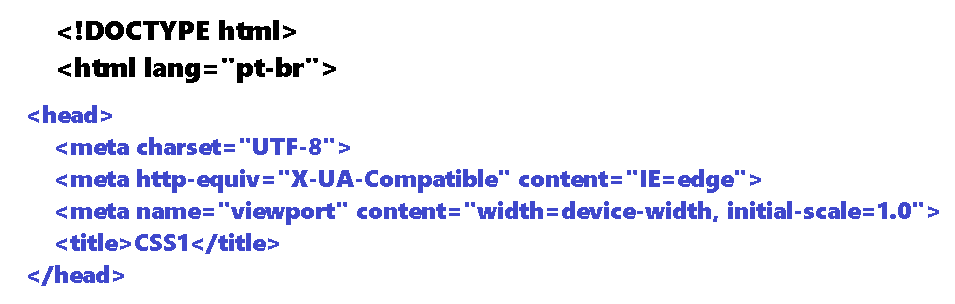

O local mais indicado para colocar ou declarar é na tag "head", que fica no inicio da página
Porque, o navegador vai começar a ler linha por linha de cima para baixo, vai ajudar na renderização da página
Não é a melhor forma, de colocar "todas as regras de CSS".
É indicada para colocar em pontos expecificos, onde você não pode mexer na estrutura no site.

Declarar interno (criar uma página só para o CSS)
O local mais indicado para colocar ou declarar é na tag "head", que fica no inicio da página
Porque, o navegador vai começar a ler linha por linha de cima para baixo, vai ajudar na renderização da página
Não é a melhor forma, de colocar "todas as regras de CSS".
É indicada para colocar em pontos expecificos, onde você não pode mexer na estrutura no site.